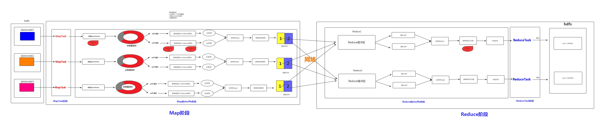

<!DOCTYPE html>
<html>
<head>
    <meta charset="utf-8">
    <meta http-equiv="X-UA-Compatible" content="IE=edge">
    <meta name="viewport" content="width=device-width, initial-scale=1">

    <title>bigdata - Blog Page</title>
<!--
Classic Template
http://www.cssmoban.com/tm-488-classic
-->
    <!-- load stylesheets -->
    <link rel="stylesheet" href="http://fonts.useso.com/css?family=Open+Sans:300,400">  <!-- Google web font "Open Sans" -->
    <link rel="stylesheet" href="../css/bootstrap1.min.css">                                      <!-- Bootstrap style -->
    <link rel="stylesheet" href="../css/templatemo-style1.css">                                   <!-- Templatemo style -->

    <!-- HTML5 shim and Respond.js for IE8 support of HTML5 elements and media queries -->
    <!-- WARNING: Respond.js doesn't work if you view the page via file:// -->
        <!--[if lt IE 9]>
          <script src="https://oss.maxcdn.com/html5shiv/3.7.2/html5shiv.min.js"></script>
          <script src="https://oss.maxcdn.com/respond/1.4.2/respond.min.js"></script>
          <![endif]-->
</head>

    <body>
       
        <div class="tm-header">
            <div class="container-fluid">
                <div class="tm-header-inner">
                    <a href="#" class="navbar-brand tm-site-name">MapReduce的运行机制</a>
                    
                    <!-- navbar -->
                    <nav class="navbar tm-main-nav">

                        <button class="navbar-toggler hidden-md-up" type="button" data-toggle="collapse" data-target="#tmNavbar">
                            &#9776;
                        </button>
                        
                        <div class="collapse navbar-toggleable-sm" id="tmNavbar">
                            <ul class="nav navbar-nav">
                                <li class="nav-item">
                                    <a href="../index.html" class="nav-link">Home</a>
                                </li>
                            </ul>                        
                        </div>
                        
                    </nav>  

                </div>                                  
            </div>            
        </div>

        <div class="tm-blog-img-container">
            
        </div>

        <section class="tm-section">
            <div class="container-fluid">
                <div class="row">

                    <div class="col-xs-15 col-sm-15 col-md-8 col-lg-12 col-xl-12">
                        <div class="tm-blog-post">
                            <h3 class="tm-gold-text"></h3>
                            <!---->
							
                            <h3 class="tm-gold-text">MapTask工作机制</h3>
                            <p>			简单概述：inputFile通过split被逻辑切分为多个split文件，通过Record按行读取内容给map（用户自己实现的）进行处理，数据被map处理结束之后交给OutputCollector收集器，对其结果key进行分区（默认使用hash分区），然后写入buffer，每个map task都有一个内存缓冲区，存储着map的输出结果，当缓冲区快满的时候需要将缓冲区的数据以一个临时文件的方式存放到磁盘，当整个map task结束后再对磁盘中这个map task产生的所有临时文件做合并，生成最终的正式输出文件，然后等待reduce task来拉数据
							</p>
							<p>
							详细步骤
							</p>
							<p>
							1.读取数据组件 InputFormat (默认 TextInputFormat) 会通过 getSplits 方法对输入目录中文件进行逻辑切片规划得到 block, 有多少个 block就对应启动多少个 MapTask. <br/>
							2.将输入文件切分为 block 之后, 由 RecordReader对象 (默认是LineRecordReader) 进行读取, 以 \n 作为分隔符, 读取一行数据, 返回 <key，value>. Key 表示每行首字符偏移值, Value 表示这一行文本内容<br/>
							3.读取 block 返回 <key,value>, 进入用户自己继承的 Mapper 类中，执行用户重写的 map 函数, RecordReader 读取一行这里调用一次<br/>
							4.Mapper 逻辑结束之后, 将 Mapper 的每条结果通过 context.write 进行collect数据收集. 在 collect 中, 会先对其进行分区处理，默认使用 HashPartitioner<br/>
							·MapReduce 提供 Partitioner 接口, 它的作用就是根据 Key 或 Value 及 Reducer 的数量来决定当前的这对输出数据最终应该交由哪个 Reduce task 处理, 默认对 Key Hash 后再以 Reducer 数量取模. 默认的取模方式只是为了平均 Reducer 的处理能力, 如果用户自己对 Partitioner 有需求, 可以订制并设置到 Job 上<br/>
							5.接下来, 会将数据写入内存, 内存中这片区域叫做环形缓冲区, 缓冲区的作用是批量收集 Mapper 结果, 减少磁盘 IO 的影响. 我们的 Key/Value 对以及 Partition 的结果都会被写入缓冲区. 当然, 写入之前，Key 与 Value 值都会被序列化成字节数组<br/>
							·环形缓冲区其实是一个数组, 数组中存放着 Key, Value 的序列化数据和 Key, Value 的元数据信息, 包括 Partition, Key 的起始位置, Value 的起始位置以及 Value 的长度. 环形结构是一个抽象概念<br/>
							·缓冲区是有大小限制, 默认是 100MB. 当 Mapper 的输出结果很多时, 就可能会撑爆内存, 所以需要在一定条件下将缓冲区中的数据临时写入磁盘, 然后重新利用这块缓冲区. 这个从内存往磁盘写数据的过程被称为 Spill, 中文可译为溢写. 这个溢写是由单独线程来完成, 不影响往缓冲区写 Mapper 结果的线程. 溢写线程启动时不应该阻止 Mapper 的结果输出, 所以整个缓冲区有个溢写的比例 spill.percent. 这个比例默认是 0.8, 也就是当缓冲区的数据已经达到阈值 buffer size * spill percent = 100MB * 0.8 = 80MB, 溢写线程启动, 锁定这 80MB 的内存, 执行溢写过程. Mapper 的输出结果还可以往剩下的 20MB 内存中写, 互不影响<br/>
							6.当溢写线程启动后, 需要对这 80MB 空间内的 Key 做排序 (Sort). 排序是 MapReduce 模型默认的行为, 这里的排序也是对序列化的字节做的排序<br/>
							·如果 Job 设置过 Combiner, 那么现在就是使用 Combiner 的时候了. 将有相同 Key 的 Key/Value 对的 Value 加起来, 减少溢写到磁盘的数据量. Combiner 会优化 MapReduce 的中间结果, 所以它在整个模型中会多次使用<br/>
							·那哪些场景才能使用 Combiner 呢? 从这里分析, Combiner 的输出是 Reducer 的输入, Combiner 绝不能改变最终的计算结果. Combiner 只应该用于那种 Reduce 的输入 Key/Value 与输出 Key/Value 类型完全一致, 且不影响最终结果的场景. 比如累加, 最大值等. Combiner 的使用一定得慎重, 如果用好, 它对 Job 执行效率有帮助, 反之会影响 Reducer 的最终结果<br/>
							7.合并溢写文件, 每次溢写会在磁盘上生成一个临时文件 (写之前判断是否有 Combiner), 如果 Mapper 的输出结果真的很大, 有多次这样的溢写发生, 磁盘上相应的就会有多个临时文件存在. 当整个数据处理结束之后开始对磁盘中的临时文件进行 Merge 合并, 因为最终的文件只有一个, 写入磁盘, 并且为这个文件提供了一个索引文件, 以记录每个reduce对应数据的偏移量<br/>
							</p>
							<h3 class="tm-gold-text">ReduceTask工作机制</h3>
							<p>
							Reduce 大致分为 copy、sort、reduce 三个阶段，重点在前两个阶段。copy 阶段包含一个 eventFetcher 来获取已完成的 map 列表，由 Fetcher 线程去 copy 数据，在此过程中会启动两个 merge 线程，分别为 inMemoryMerger 和 onDiskMerger，分别将内存中的数据 merge 到磁盘和将磁盘中的数据进行 merge。待数据 copy 完成之后，copy 阶段就完成了，开始进行 sort 阶段，sort 阶段主要是执行 finalMerge 操作，纯粹的 sort 阶段，完成之后就是 reduce 阶段，调用用户定义的 reduce 函数进行处理<br/>
							</p>
							<p>
							详细步骤
							</p>
							<p>
							1.Copy阶段，简单地拉取数据。Reduce进程启动一些数据copy线程(Fetcher)，通过HTTP方式请求maptask获取属于自己的文件。<br/>	2.Merge阶段。这里的merge如map端的merge动作，只是数组中存放的是不同map端copy来的数值。Copy过来的数据会先放入内存缓冲区中，这里的缓冲区大小要比map端的更为灵活。merge有三种形式：内存到内存；内存到磁盘；磁盘到磁盘。默认情况下第一种形式不启用。当内存中的数据量到达一定阈值，就启动内存到磁盘的merge。与map 端类似，这也是溢写的过程，这个过程中如果你设置有Combiner，也是会启用的，然后在磁盘中生成了众多的溢写文件。第二种merge方式一直在运行，直到没有map端的数据时才结束，然后启动第三种磁盘到磁盘的merge方式生成最终的文件。<br/>
							3.合并排序。把分散的数据合并成一个大的数据后，还会再对合并后的数据排序。<br/>
							4.对排序后的键值对调用reduce方法，键相等的键值对调用一次reduce方法，每次调用会产生零个或者多个键值对，最后把这些输出的键值对写入到HDFS文件中。<br/>
							</p>
							<h3 class="tm-gold-text">shuffle过程</h3>
                            <p>
							map 阶段处理的数据如何传递给 reduce 阶段，是 MapReduce 框架中最关键的一个流程，这个流程就叫 shuffle.shuffle: 洗牌、发牌 ——（核心机制：数据分区，排序，分组，规约，合并等过程）<br/>
							shuffle 是 Mapreduce 的核心，它分布在 Mapreduce 的 map 阶段和 reduce 阶段。一般把从 Map 产生输出开始到 Reduce 取得数据作为输入之前的过程称作 shuffle。<br/>
							Collect阶段：将 MapTask 的结果输出到默认大小为 100M 的环形缓冲区，保存的是 key/value，Partition 分区信息等。<br/>
							Spill阶段：当内存中的数据量达到一定的阀值的时候，就会将数据写入本地磁盘，在将数据写入磁盘之前需要对数据进行一次排序的操作，如果配置了 combiner，还会将有相同分区号和 key 的数据进行排序。<br/>
							Merge阶段：把所有溢出的临时文件进行一次合并操作，以确保一个 MapTask 最终只产生一个中间数据文件。<br/>
							Copy阶段：ReduceTask 启动 Fetcher 线程到已经完成 MapTask 的节点上复制一份属于自己的数据，这些数据默认会保存在内存的缓冲区中，当内存的缓冲区达到一定的阀值的时候，就会将数据写到磁盘之上。<br/>
							Merge阶段：在 ReduceTask 远程复制数据的同时，会在后台开启两个线程对内存到本地的数据文件进行合并操作。<br/>
							Sort阶段：在对数据进行合并的同时，会进行排序操作，由于 MapTask 阶段已经对数据进行了局部的排序，ReduceTask 只需保证 Copy 的数据的最终整体有效性即可。<br/>
							Shuffle 中的缓冲区大小会影响到 mapreduce 程序的执行效率，原则上说，缓冲区越大，磁盘io的次数越少，执行速度就越快缓冲区的大小可以通过参数调整,  参数：mapreduce.task.io.sort.mb  默认100M<br/>							
							</p>
							
                        </div>
                    
                        
                    </div>


                </div>
                
            </div>
        </section>
        
        <footer class="tm-footer">
            <div class="container-fluid">

            </div>
        </footer>

        <!-- load JS files -->
        <script src="js/jquery-1.11.3.min.js"></script>             <!-- jQuery (https://jquery.com/download/) -->
        <script src="https://www.atlasestateagents.co.uk/javascript/tether.min.js"></script> <!-- Tether for Bootstrap, http://stackoverflow.com/questions/34567939/how-to-fix-the-error-error-bootstrap-tooltips-require-tether-http-github-h --> 
        <script src="js/bootstrap.min.js"></script>                 <!-- Bootstrap (http://v4-alpha.getbootstrap.com/) -->
       
</body>
</html>